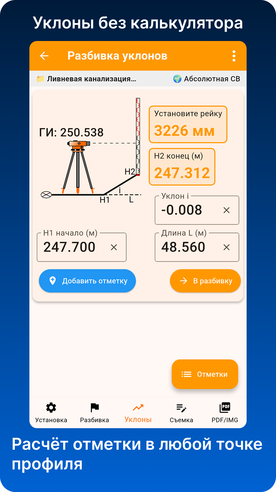
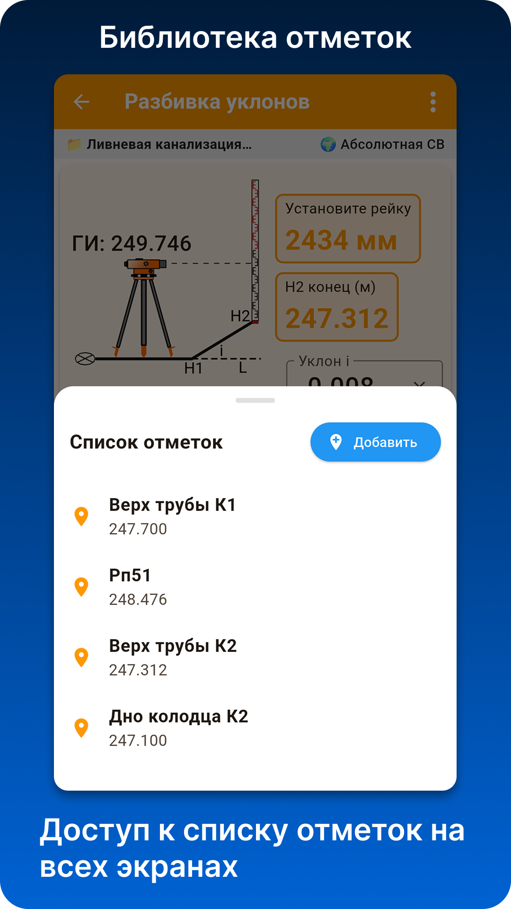
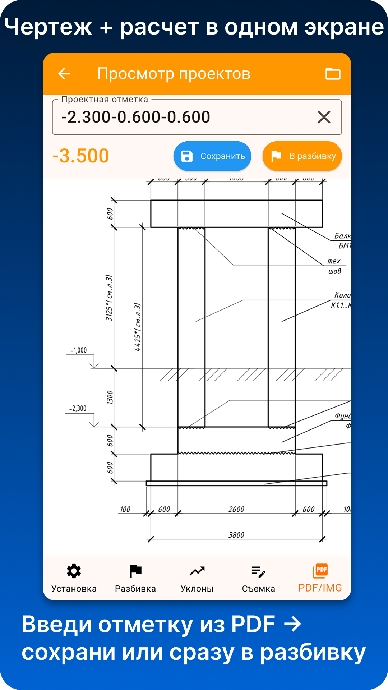

Репер
Задание исходного репера и отсчёта по рейке.
Nivelir
Приложение для работы с оптическим нивелиром: исходный репер, отсчёт по рейке, горизонт прибора, высотные отметки, разбивка и съёмка высот.
Полевой помощник для мастеров, прорабов и геодезистов.
Возможности
Задание исходного репера и отсчёта по рейке.
Расчёт высоты визирного луча и рабочих отметок.
Получение нужного отсчёта по рейке для проектной высотной отметки.
Ввод отсчётов по рейке и получение фактических высот.
Сохранение реперов, рабочих точек и высотных отметок.
Передача результатов для дальнейшей работы и оформления.
Скриншоты





Доступ
Приложение доступно в RuStore, Huawei AppGallery и в виде APK на официальном сайте. Условия доступа отображаются внутри приложения. PRO-доступ предоставляется на срок без автопродления.